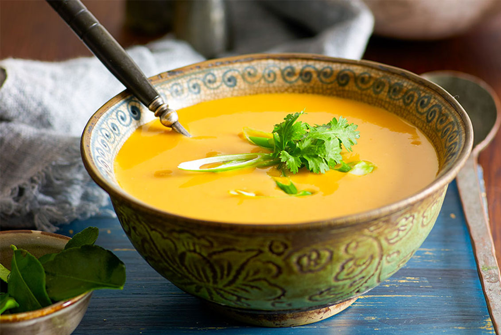

Soup
Beethoven once said "Only the pure of heart can make a good soup".Well,here's my attempt at doing just that!
- Step 1
- Step 2
- Step 3
- Enjoy!
Beethoven once said "Only the pure of heart can make a good soup".Well,here's my attempt at doing just that!
Who can resist a fresh salad! Here's one of my favourites.
Pizza the king of comfort foods.Try this simple,taste sensation.